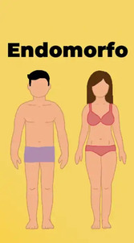

Contenido Principal
Calcula tus Calorías y Proteínas Diarias
Registro de Comidas Diarias
Calculadora de Estatura y Peso Ideal
Tipos de Cuerpos
Mesomorfo
Los mesomorfos tienen una estructura ósea mediana, son naturalmente musculosos y poseen un metabolismo eficiente. Se les recomienda una dieta equilibrada en proteínas y carbohidratos para mantener su musculatura.
Ectomorfo
Los ectomorfos suelen ser delgados, con hombros estrechos y un metabolismo rápido. Benefician de una dieta rica en carbohidratos complejos como arroz, pasta y panes integrales para aumentar su masa corporal.
Endomorfo
Los endomorfos tienden a ganar peso fácilmente, con una estructura ósea ancha y mayor masa muscular y grasa. Se recomienda una dieta baja en carbohidratos simples y rica en proteínas y verduras para controlar su peso.
Niveles de Actividad
Actividad sedentaria: Cuando el individuo ejecuta menos de 30 minutos de ejercicios al día y menos de tres días a la semana.
Actividad ligera: Incluye actividades que no requieren un gran esfuerzo físico y que no elevan significativamente la frecuencia cardíaca.
Actividad moderada: Actividades que requieren un esfuerzo razonable y que elevan la frecuencia cardíaca, pero aún permiten hablar sin dificultad.
Actividad intensa: Incluye actividades que requieren un alto nivel de esfuerzo y que elevan significativamente la frecuencia cardíaca. Es difícil mantener una conversación durante estas actividades.
Recordatorio Energético
Créditos y Referencias
Créditos
Agradecimientos a los siguientes nutriologos por su valiosa información:
- Dr. Juan Pérez - Nutriologo especializado en dietas deportivas
- Lic. Ana Torres - Experta en nutrición infantil
- Dr. Carlos Martínez - Nutriologo clínico con experiencia en enfermedades metabólicas
Referencias
La información presentada en esta aplicación se basa en las siguientes fuentes:
- Nutrición y salud, de la Universidad Nacional
- Manual de dietoterapia, de la Asociación de Nutriologos
- Recomendaciones de la Organización Mundial de la Salud sobre alimentación saludable
Esta aplicación busca ofrecer una guía práctica para promover hábitos de alimentación saludable y equilibrada.